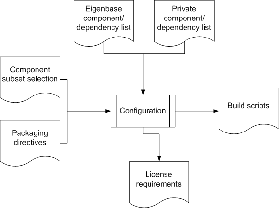
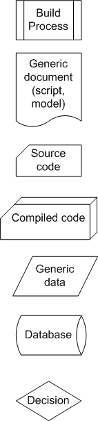
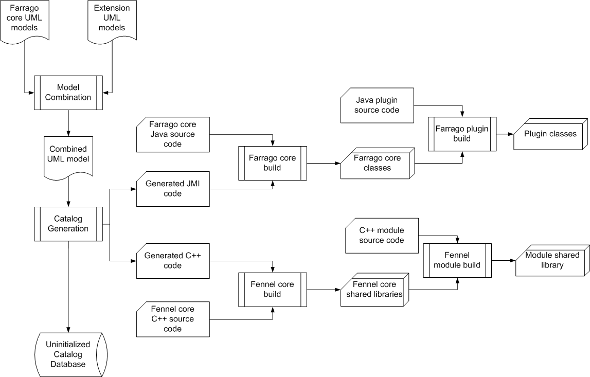
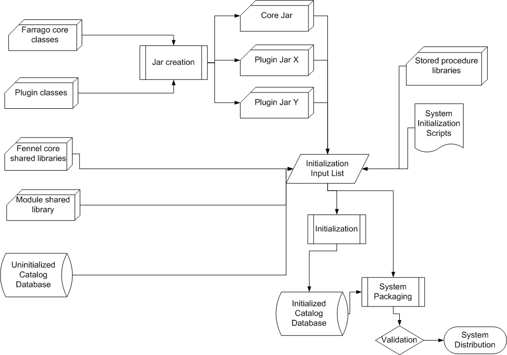
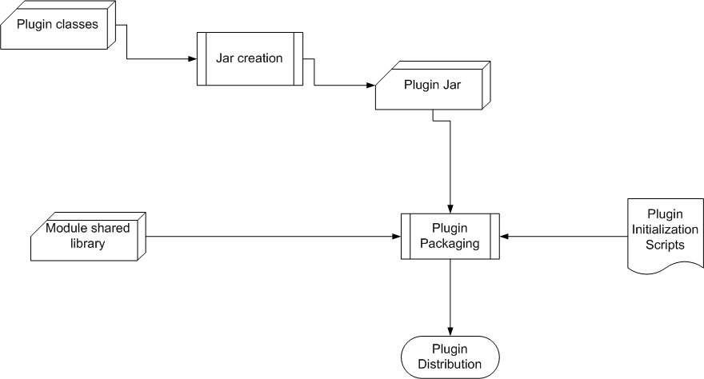

Farrago Packaging
Overview
This document provides an overview of how the Farrago frameworks and
plugins are built and packaged. Please read the architecture overview first.
Build Configuration
With a pluggable architecture, figuring out what needs to be built and
how in order to create a useful specialized distribution can be a
major headache. Our plan is to follow the Linux kernel
configuration process at an abstract level, though of course the
details are different:

- Development organizations such as The Eigenbase Project will
maintain a master list of all contributed components, together with
their dependencies and licensing requirements. This list will be
included in all downloaded source distributions.
- Projects wishing to incorporate additional non-contributed
components can maintain their own private lists as well.
- The configuration process takes the union of the above lists as
input, together with project-specific directives for which components
to include and how they should be packaged. An interactive tool will
be supplied for specifying these directives
- TODO: add a dependency validation step to the digram
- As its primary output, the configuration procedure produces a
number of build scripts (whose steps are outlined in the rest of this
document.
- In addition, the configuration procedure produces a description of
the licenses required in order to distribute the result of the build.
For example, these requirements might state "This system may be
distributed under the GNU GPL or under a commercial license from
Companies X and Y".
NOTE: in the diagram above and in those which follow, the meaning of
the pseudo-flowchart symbols is as follows:

Assembly Line
Once the top-level build scripts are defined for a particular
distribution, the procedure for building the various core and
extension components is as follows:

The result of this assembly line is a number of individual modules
which have not yet been packaged into a redistributable form, plus an
uninitialized catalog database. Further steps depend on the nature of
the distribution to be produced (as covered in the next two sections).
System Packaging
One option is to package a distribution for an entire working system,
as follows:

After plugin jars are built, the Initialization process
performs enough bootstrapping to be able to load all required
components and run site-independent initialization scripts. The
result is an initialized site-independent catalog database; this must
be included in the final packaging together with the executable
components, and serves as a base for site-dependent initialization
when a distribution is deployed. Of course, other resources such as
documentation should be included in the final packaging, but are not
shown here.
Plugin Packaging
The other distribution option is to package only individual plugins,
with the intention that they be used together with some other full
system distributions. In this case, it is a requirement that such
plugins consist of only code, without model extensions, although the
plugins are allowed to depend on model extensions provided with
specific system distributions. The plugin-only packaging process is
much simpler:

The diagram above illustrates the most general case of both Java and
C++ code being required to implement the plugin.